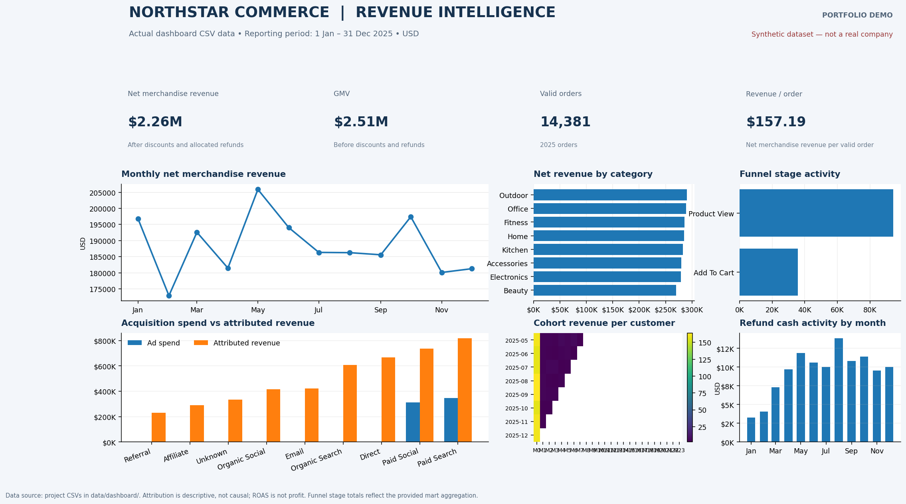

The challenge
Commerce data is spread across events, orders, products, campaigns, ad spend and refunds. Without consistent definitions, teams risk making decisions from conflicting numbers.
A revenue intelligence platform that brings customer behaviour, order performance, acquisition spend and attribution into one decision-ready analytics layer.
The goal was to design a practical analytics foundation that helps a commerce team see what drives revenue, where the funnel loses momentum and how acquisition channels perform.
Commerce data is spread across events, orders, products, campaigns, ad spend and refunds. Without consistent definitions, teams risk making decisions from conflicting numbers.
Create a repeatable pipeline, define clear grains and business metrics, validate key relationships, then publish analysis-ready marts for Tableau.
A documented analytics project with synthetic source data, transformation code, SQL models, validation checks and dashboard-ready CSVs.
The build separates source records from reporting models, makes transformations reproducible and checks important totals before data reaches the dashboard.
Customers, events, sessions, orders, products, campaigns, spend, touchpoints and refunds.
Deduplicate events, standardise records, connect orders to sessions and build reporting tables.
Check relationships, row counts, order-item reconciliation and revenue consistency.
Publish separate marts for executive, customer/product and marketing analysis.
Implementation note: the Python CSV generation and transformation workflow has been run. PostgreSQL model scripts are included in the project, but were not executed against a live PostgreSQL instance in this environment.
Each output has a defined grain. Keeping the marts separate prevents accidental many-to-many joins and inflated KPIs in Tableau.
These are observations from the generated dataset, not claims about a real company. They demonstrate the kinds of questions the platform is built to answer.
Revenue after discounts and allocated refunds for valid 2025 orders, using the project’s documented definitions.
The validation run found no order-item GMV mismatches above $0.01 in the generated dataset.
Every valid 2025 order has a linked session and an attribution record in the project’s validation results.
Interpretation guardrails: attribution is descriptive, not causal incrementality. ROAS is not profit. Refunds are allocated proportionally across category net-before-refund value, with rounding residuals assigned so totals reconcile.
This section is intentionally prepared for your Tableau workbook link and final dashboard screenshots. Add them after you finish the three tabs.
Replace this placeholder with your Tableau Public URL when your workbook is ready.
Optional development preview: the image below was rendered from the project’s actual dashboard CSVs. It is a static preview, not a Tableau workbook screenshot. Replace it with your finished Tableau captures before publishing the case study.

I help teams turn scattered data into reliable models, clear metrics and decision-ready dashboards.